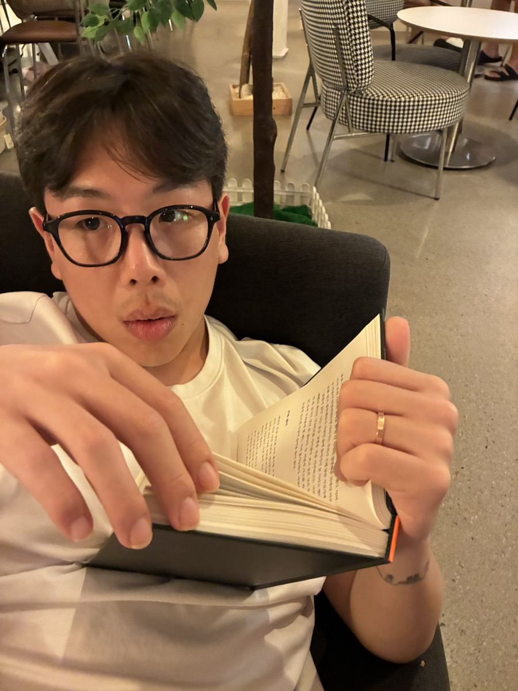

hello —
Woosik Kim
I'm a master's student in the Robotics & Vision Lab at KAIST.
I make artificial things that people can feel something for.
And along the way, we rediscover our own lives.

I'm a master's student in the Robotics & Vision Lab at KAIST.
I make artificial things that people can feel something for.
And along the way, we rediscover our own lives.